 COTONOIR, a trendy and street wear clothing brand. T-shirts, tank tops, sweatshirts, caps (hats)…
Founded by Friends the brand COTONOIR has for first (main) motto to show that nothing is unsurmountable.
The idea simply came from the cotton picked / treated by black people during slavery. Respectful of their African roots / heritage and wanting to share/pass on/ spread this state of mind through their brand, those to words have been joined together to create the brand COTONOIR.
A first pre-collection associating historical references and catch phrases The goal was, on one end, to shock the people, getting visual, make the brand talked about. On one another end, to share a piece off our history, black people history.
After successfully organizing a/ in partnership with Team de Nuit, event promoters / planner in Paris, on their After work Hip Hop « La Nocturne » launch, numerous orders for t-shirts came from public and the Team de Nuit crew. The brand also went on a partnership with the Siscostar crew for an event at the Libertalia Lounge.